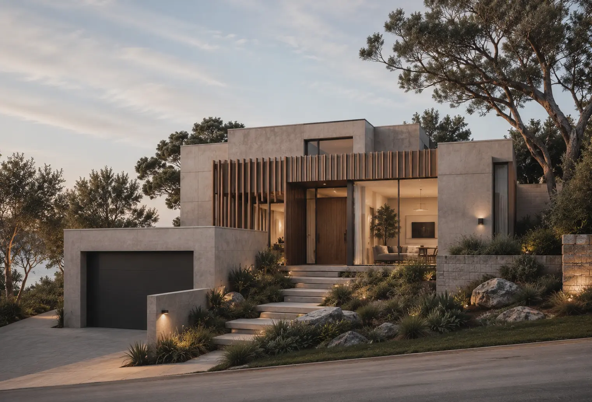
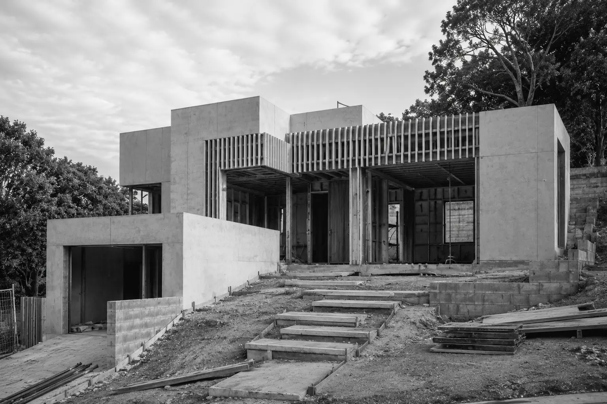
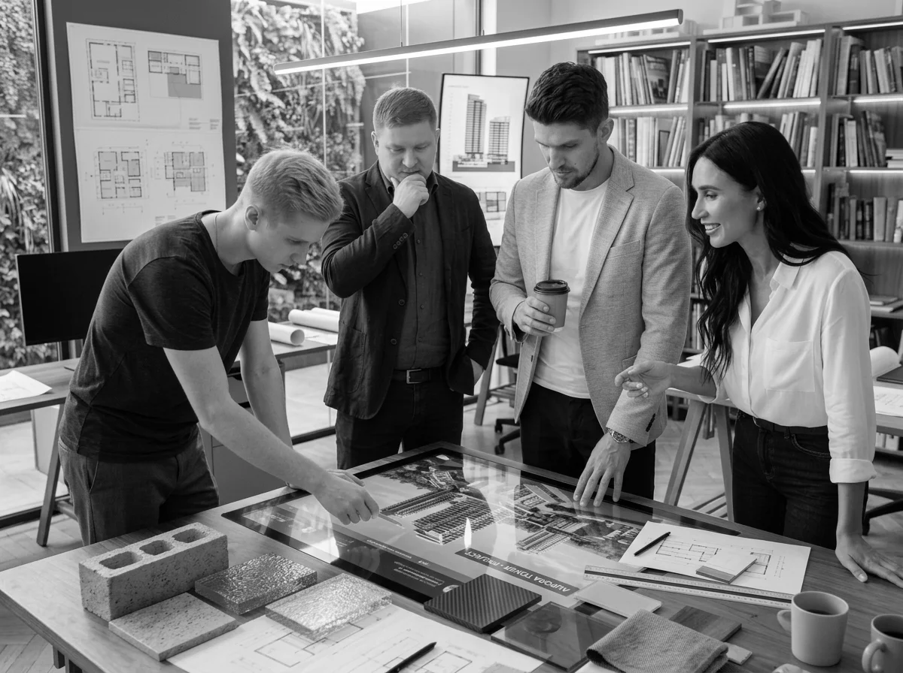
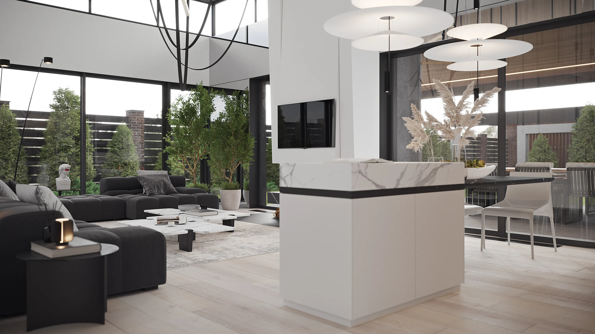
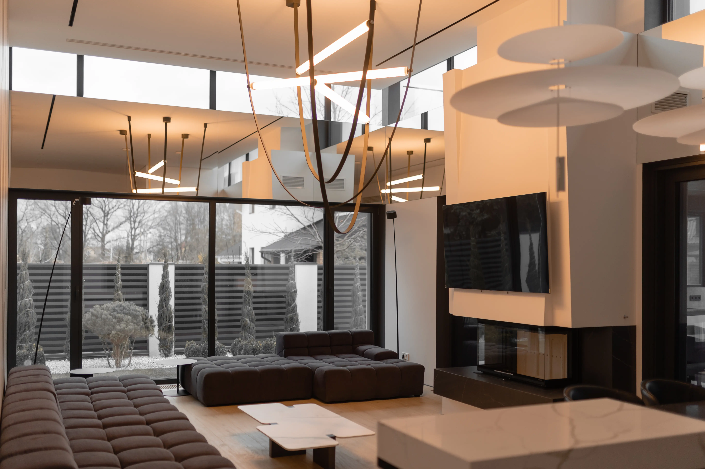
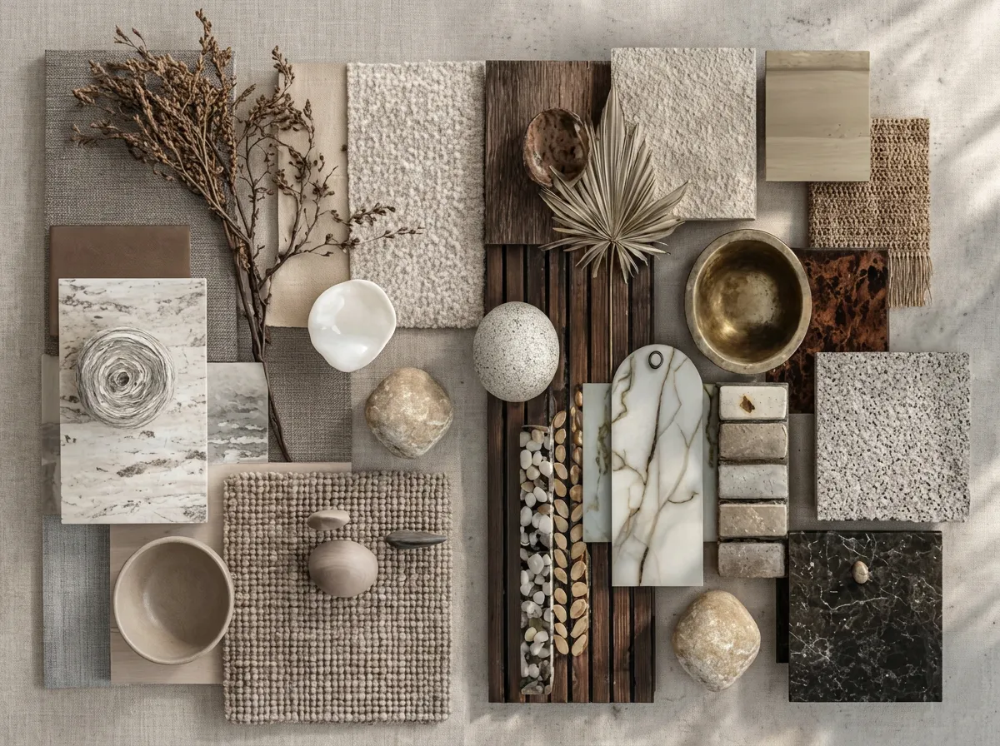
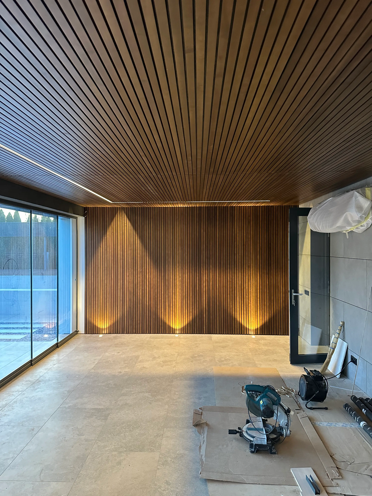
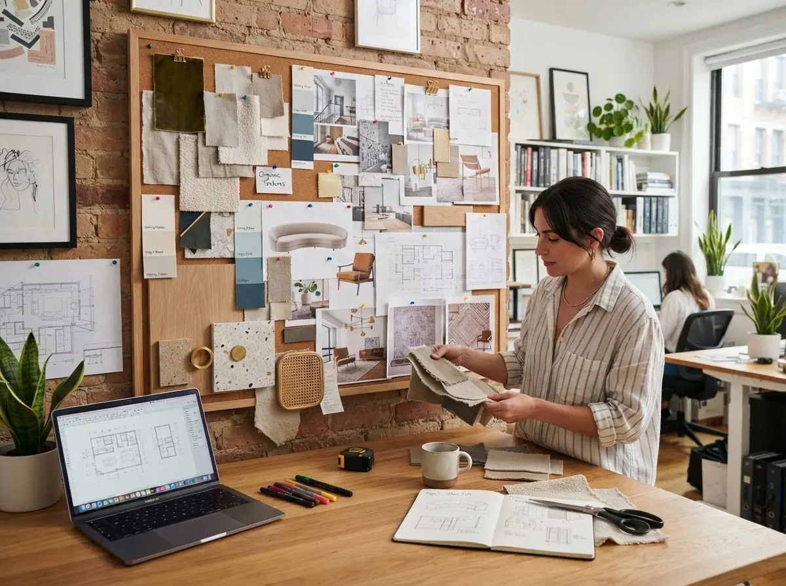

(ARCHITECTURE / FORM)



The final layer defines how a building is experienced: texture, shadow and detail brought into balance. This is where the architecture stops being a diagram and starts behaving like a place someone actually lives in. Handrails, thresholds and the way a door meets its frame are treated with the same seriousness as the overall form, because these small moments are what people notice every single day.
On site, drawings become volume: concrete, timber and glass are assembled with the same discipline as the plan. Every junction and structural decision is checked against the original intent, so nothing is lost between paper and reality. We stay closely involved through this stage, visiting the site regularly to resolve details as they come up, rather than leaving that judgement entirely to the build team.
Every project starts as a line on paper: proportion, orientation and light considered long before a single wall exists. We study the site, the sun path and the surrounding context until the plan feels inevitable rather than imposed. Early sketches are tested against orientation, privacy and how the building will be approached, long before floor plans are finalised.
(INTERIOR / ATMOSPHERE)



A space begins as an idea: mood, material and movement sketched before anything is built. We think through how light will move across a room at different times of day, long before any furniture is chosen.
Visualization lets us test light and atmosphere in detail before construction starts, so surprises are resolved on screen rather than on site.
The finished interior carries that original idea through, quiet and considered in every corner. Nothing is decorative for its own sake, every choice still serves the same atmosphere we set out to create.
(TURNKEY / DETAIL)



We start by selecting materials that suit both the architecture and how the space will be lived in. Durability, maintenance and feel are weighed together, so every choice holds up well beyond the first year. We also account for how each material will age, since a finish that looks good on day one but wears poorly ends up costing more in the long run.
Paint, texture and finish are chosen together, tested against real light before anything is applied. Samples are reviewed on site, in the actual room, so what looks right on a board also looks right in daylight. We track every decision against a shared reference so nothing is left to memory once work is underway.
Every specification is documented precisely, so execution matches the design without compromise. Contractors work from a single clear reference, which keeps the finished result faithful to what was originally agreed. If a substitution is ever needed on site, it's checked against the same standard before it's approved, so the final result never quietly drifts from the plan.